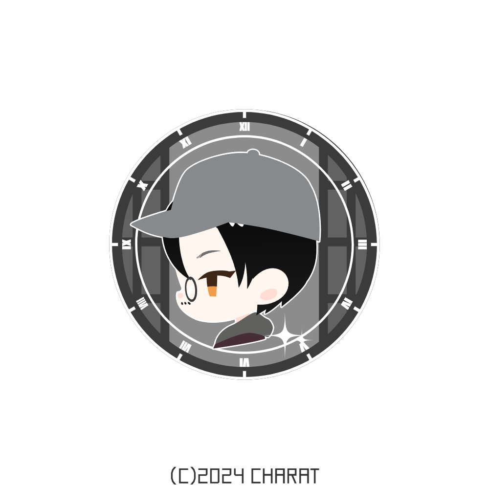

TAKAMOTO KAIMU
PORTFOLIO

やりたい事は沢山あるけど、一つずつ身に付けていきたい。
まず初めに、肉体改造！

ORIGINAL
やりたいことの優先度をつけるとしたら、まず最初に筋トレして、体重を今から10kgは減らしたい。次にやりたいのはギターで曲を弾きたい。アコースティックギターを買ってから何も進めることができてないので、良い節目として弾けるようになりたい。目指せ千本桜演奏!最後はテスト対策でアルバイトを制限していたので、金欠。お金欲しい...